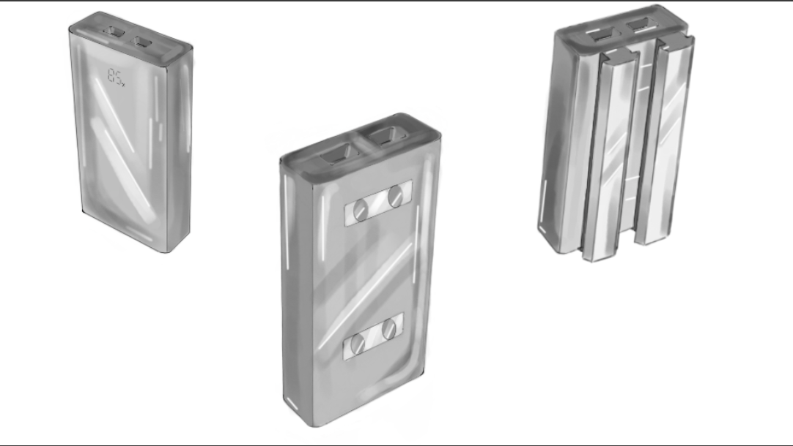

Prothese Project: Opdrachtomschrijving
Inleiding:
De opdrachtgever, Robert Scheepmaker, ervaart problemen met een beenprothese die niet altijd opgeladen is. Dit kan leiden tot beperkingen in zijn mobiliteit en dagelijkse activiteiten. Het doel van dit project is om de oorzaak van dit probleem te achterhalen en een oplossing te bedenken. De leerlingen worden uitgedaagd om dit probleem te onderzoeken en een oplossing te ontwerpen.
Doel:
Het doel van dit project is voor de leerlingen om te reflecteren op de werking van protheses en de uitdagingen die komen kijken bij het ontwerpen van een functionele en betrouwbare prothese. Daarnaast zullen de leerlingen leren hoe ze een ontwerp kunnen presenteren en hoe ze feedback kunnen toepassen om hun ontwerp te optimaliseren.
Opdracht:
De taak van de leerlingen is om een oplossing te ontwerpen voor het probleem waar Robert Scheepmaker mee kampt. Dit houdt in dat er onderzoek gedaan moet worden naar de oorzaken van het probleem en dat er mogelijke oplossingen bedacht moeten worden. Na het bedenken van een oplossing, wordt van de leerlingen verwacht dat zij hun ontwerp uitwerken en testen. Uiteindelijk zullen de leerlingen hun ontwerp presenteren aan Robert Scheepmaker en zullen ze feedback verzamelen om hun ontwerp te verbeteren, indien er tijd voor is.
Voorbeeld Uitwerking van de Projectfasen
1. Onderzoeksfase:
-
a. Tijdens het onderzoek kwamen de leerlingen erachter dat een van de oorzaken waarom Robert Scheepmaker zijn prothese niet altijd oplaadt, is omdat hij het simpelweg vergeet. Een andere reden is dat de oplaadport geen standaardport is, waardoor hij niet altijd een oplader bij de hand heeft.
-
b. De leerlingen hebben verschillende bronnen geraadpleegd om informatie te verzamelen over protheses en hoe ze functioneren.
-
c. Na het analyseren van de verzamelde informatie hebben de leerlingen een aantal mogelijke oplossingen bedacht, waaronder het gebruik van een universele oplaadport of een externe powerbank.
2. Ontwerpfase:
-
a. Als oplossing hebben de leerlingen een ontwerp gemaakt voor een powerbank die aan de prothese kan worden geklikt. Deze powerbank zou ervoor zorgen dat de prothese onderweg opgeladen kan worden, ook als Robert geen toegang heeft tot een stopcontact.
-
b. Met behulp van schetsen en 3D-modellering software, hebben de leerlingen een prototype van de powerbank ontworpen.

-
c. Het prototype werd getest op een demoprothese, waarbij de effectiviteit van het opladen werd geëvalueerd en de gebruiksvriendelijkheid werd beoordeeld.
3. Presentatiefase:
-
a. De leerlingen hebben een presentatie voorbereid waarin ze het proces van hun onderzoek en ontwerp toelichtten.
-
b. Tijdens de presentatie hebben ze hun oplossing aan Robert Scheepmaker getoond, waarbij ze zowel de voordelen als mogelijke nadelen bespraken.
-
c. Robert Scheepmaker heeft waardevolle feedback gegeven, die de leerlingen vervolgens hebben gebruikt om hun ontwerp verder te verfijnen en te optimaliseren.
Voorbeeld Reflectie
Groepsniveau:
In het begin hadden we als groep wat moeite om een duidelijke taakverdeling vast te stellen. Maar na een brainstormsessie en wat discussie, vonden we een ritme waarin ieders vaardigheden het best werden benut. Gedurende het project hebben we geleerd om effectief te communiceren en feedback te geven zonder persoonlijk te worden. We hebben elkaar gesteund en gemotiveerd, wat heeft geleid tot een eindproduct waar we trots op zijn. Er waren zeker uitdagingen, zoals meningsverschillen over het ontwerp en technische problemen, maar die hebben we samen overwonnen.
Individueel niveau:
Op persoonlijk vlak heb ik veel geleerd tijdens dit project. Ik kwam erachter dat mijn kracht ligt in het gedetailleerd uitwerken van ideeën en het presenteren van onze bevindingen. Ik realiseerde me ook dat ik soms de neiging heb om teveel op details te focussen en het grotere plaatje uit het oog te verliezen. Feedback van mijn groepsgenoten heeft me geholpen om dit in te zien en te verbeteren. Dit project heeft mijn zelfbewustzijn en mijn vaardigheden op het gebied van samenwerking vergroot.